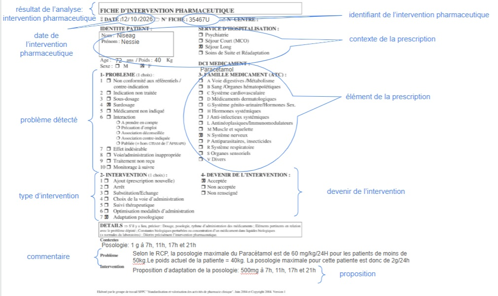

Links: Table of Contents | QA Report Liens: Table des matières | QA | Historique des versions
Show Usage
Show Usage
http://BogusSystemMedicabase.com
http://data.esante.gouv.fr/ansm/medicament/UCD
http://data.esante.gouv.fr/ansm/medicament/codeSMS
https://hl7.fr/ig/fhir/core/CodeSystem/fr-core-cs-v2-0203
https://mos.esante.gouv.fr/NOS/TRE_G15-ProfessionSante/FHIR/TRE-G15-ProfessionSante
This fragment is available on index.html
Certaines ressources sémantiques de ce guide sont protégées par des droits de propriété intellectuelle couverte par les déclarations ci-dessous. L’utilisation de ces ressources est soumise à l’acceptation et au respect des conditions précisées dans la licence d’utilisation de chacune d’entre elle.
| Type | Reference | Content |
|---|---|---|
| web | interopsante.org |
|
| web | hl7.fr | Site HL7 |
| web | interopsante.org |
IG © 2020+ Interop'Santé
. Package hl7.fhir.fr.analyse-pharma#0.1.0-ballot based on FHIR 4.0.1
. Generated 2026-05-29
Links: Table of Contents | QA Report Liens: Table des matières | QA | Historique des versions |
| web | sfpc.eu | les listes des codes qualifiant l’intervention pharmaceutique (problème et type d’intervention) définies par la SFPC pour l’intervention pharmaceutique telles que représentées sur la fiche d’intervention pharmaceutique hôpital |
| web | github.com | Pour cela, il suffit de télécharger le package.tgz et l’importer dans un serveur, par exemple sur hapi en suivant ce script python open source. |
| web | www.interopsante.org | Ce domaine est pris en charge par le GT Pharmacie d’HL7 France au sein de l’association Interop’Santé . L’historique des versions et des travaux est détaillé dans la page de suivi des travaux . |
| web | www.iso.org |
ISO maintains the copyright on the country codes, and controls its use carefully. For further details see the ISO 3166 web page: https://www.iso.org/iso-3166-country-codes.html
Show Usage
|
| web | ucum.org |
The UCUM codes, UCUM table (regardless of format), and UCUM Specification are copyright 1999-2009, Regenstrief Institute, Inc. and the Unified Codes for Units of Measures (UCUM) Organization. All rights reserved. https://ucum.org/trac/wiki/TermsOfUse
Show Usage
|
|
InterventionAnnotee.jpg  |
ValidationAnnotee.jpg 
|
tree-filter.png 
|